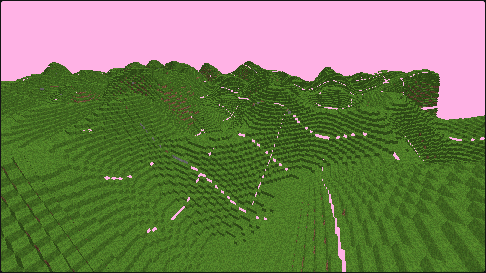
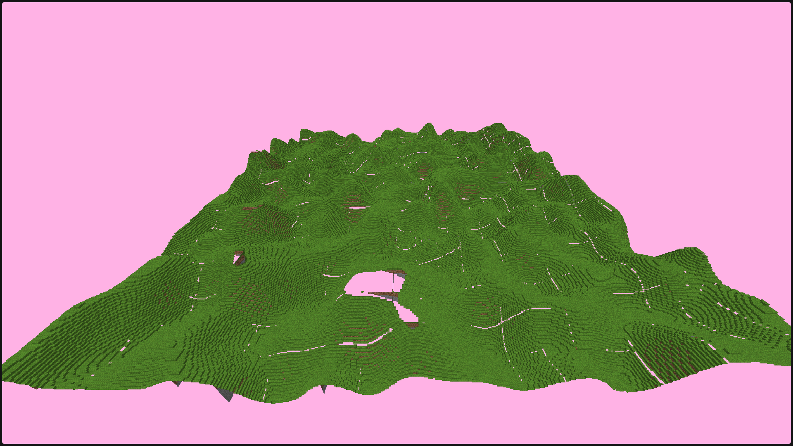
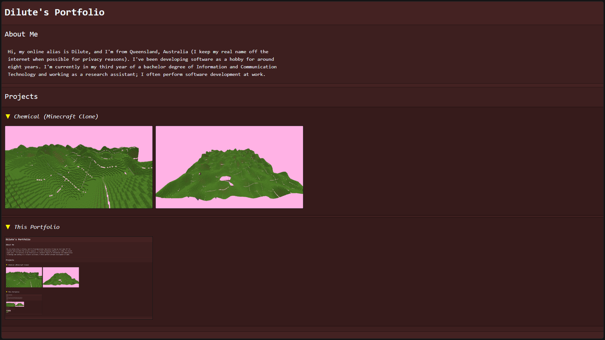

Hi, my online alias is Dilute, and I'm from Queensland, Australia (I keep my real name off the internet when possible for privacy reasons). I've been developing software as a hobby for around eight years. I'm currently in my third year of a bachelor degree of Information and Communication Technology and working as a research assistant; I often perform software development at work.
This is a visualizer for various sorting algorithms that I created about about four years ago, but I recently adapted it to run on the web. It uses Emscripten to compile to WebAssembly and CMake for the build. It is written in C++ and uses OpenGL 3.0 for rendering.
The most challenging part of this project would probably have been trying to code these sorting algorithms in a way that rendering can occur in between each individual swap operation. Trying to run one iteration of the algorithm at a time definitely changes how you need to think about it, but if I get a chance to remake this today, I'd probably consider precomputing it instead and just storing the operations and playing them back.
GitHub: https://github.com/DiluteDeveloper/SortingAlgorithmVisualizer
Web Demo: https://dilutedeveloper.github.io/SortingAlgorithmVisualizer/
Chemical (Minecraft Clone) is a Minecraft clone I created that started development roughly two years ago. I've recently adapted it to run on the web and am currently actively developing it. It uses Emscripten to compile to WebAssembly and CMake for the build. It is written in C++ and uses OpenGL 3.0 for rendering. There are currently a few obvious bugs that I'm working on fixing.
The project is in its early stages, but the main problem faced was how to store block geometry data efficiently. Think about it:
Each 16x16 chunk has
a surface area of 256 blocks, for flat normals, each face has 6 vertices, and each vertical column on that surface area might have 3 faces.
This gives us 256*3*6=4608 vertices per chunk, where each vertex may need to represent a 3D position, a face normal
direction, and UV coordinates, generally speaking that is 32 bytes of data per vertex.
To render a 16x16 chunk grid like this, we would need to process a
whopping 256*3*6*32*16*16=37MB of block data on the CPU and the GPU needs to process that data every frame. This is a simplified example and it's 150MB for a 32x32 chunk grid.
Instead of doing this, I opted to store block type, position within chunk, and face orientation in a single 4-byte/32-bit integer for each face as a bitmask. This
is the layout:
5,5,5,5 5,5,5,5 5,5,4,4 4,4,4,3 3,3,3,3 3,3,3,3 2,2,2,2 2,1,1,1
Where:
5 = Block type bits
4 = X position within chunk bits
3 = Z position within chunk bits
2 = Z position within chunk bits
1 = face orientation bits (
000 = Top face encoding
001 = Bottom face encoding
010 = Right face encoding
011 = Left face encoding
100 = Front face encoding
101 = Back face encoding
110 = Unused
111 = Unused
)
Essentially, different
bits represent different data about the block and face, and the GPU, which by design, has much greater parallel processing capability than the CPU, has the
job of turning this data into vertices, instead of the CPU.
Compared to 37MB in the example earlier, this is now 786KB of vertex data sent to the GPU, a 46x decrease in the amount of vertex data that the CPU needs to process and send to
the GPU! Transmitting data from CPU to GPU is also very slow so this is a massive win for performance.
GitHub: https://github.com/DiluteDeveloper/Chemical/tree/ChemicalMC
Web Demo: https://dilutedeveloper.github.io/Chemical/


This project is what you are currently looking at: my portfolio. This was a great experience to brush up on my web development skills.
GitHub: https://github.com/DiluteDeveloper/Portfolio
Website: https://dilutedeveloper.github.io/Portfolio/
